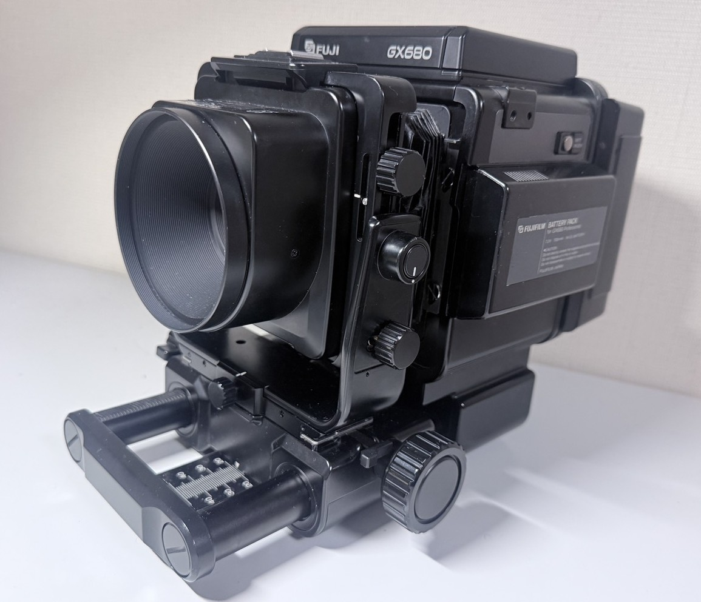
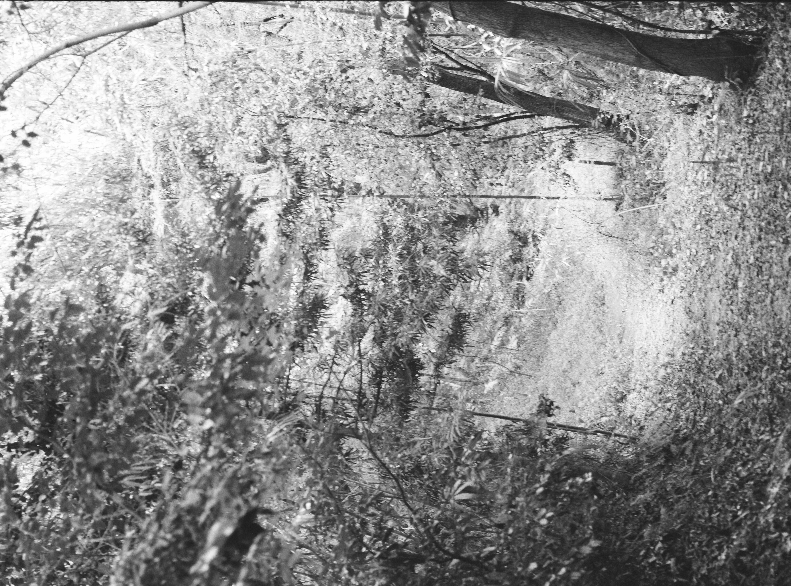
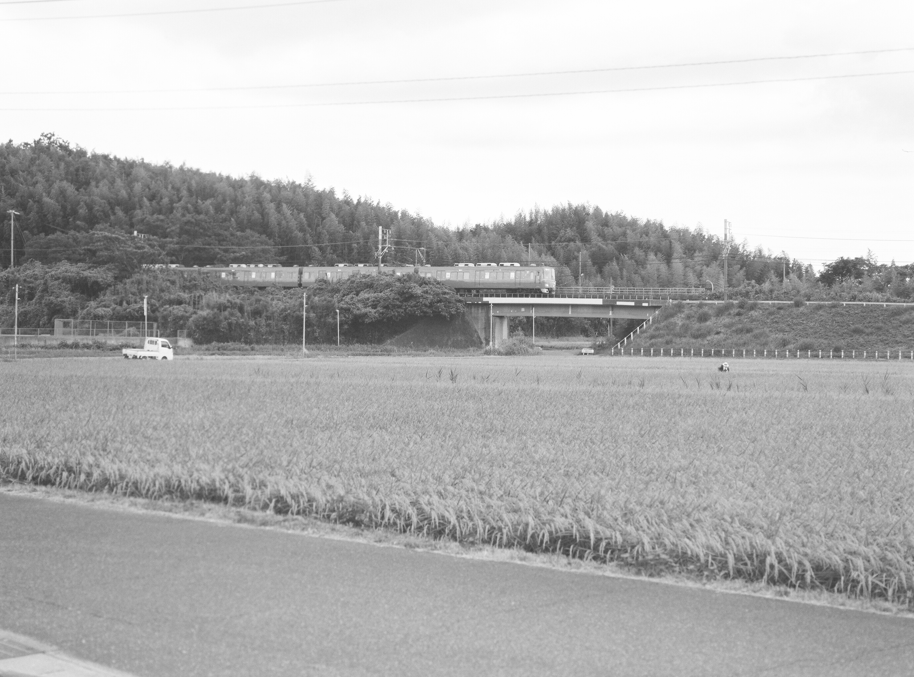

【GX680 Professional（初代型）】
【フジ・浪漫の塊】
基本情報
| メーカー | 【FUJIFILM】 |
|---|---|
| 機種名 | 【FUJIFILM GX680 Professional（初代型）】 |
| 発売年 | 【1986年】 |
| 使用フィルム | 【120フィルム】 |
| 撮影方式 | 【6×8判・ロールフィルム使用】 |
| レンズマウント | 【独自規格（しいて言うならGXマウント）】 |
| シャッター | 【電子シャッター・400～8s】 |
| 露出 | 【マニュアル露出】 |
外観

かなりゴツゴツしており、メカメカしいカメラです。非常にロマンを感じます。 見た目からして「あ、このカメラは普通ではないな」って感じが見て取れますね。 多分詳しくない人からすれば”測量機器”といった方が信じてくれそうです。
ちなみにお察しの方も多いでしょうがこのサイトのファビコン （サイト開いた時のマーク）の元はこのカメラです。
特徴
このカメラは何というか・・・。
兎に角”メカニカル”って感じのカメラです。ガチャガチャしててシャッターを切らなくても触ってて楽しいです。
ですが試写した所一枚分勝手にまかれたのはマイナス。
まぁフィルムバック側の記憶情報を保持する用のバッテリーが死んでるので、
次撮影する場合はなるべく電源を切らないようにしたい。
（だがバッテリーが長持ちしないのが真の問題なのだが）
スペック等々
測光は”マニュアル測光”。
まぁわかりやすく言うとガイドライン的なものは搭載されてないということです。
ですが一応、シャッターを切った時に＋（過多）ーEXP（正常）ー－（過少）の三段階で
評価はしてくれます。具体的に何段オーバー・アンダーだったとかはありません。
なので測光する時は必然的に外部測光に頼ることになるのがうーむって感じ。
後は「正常・異常」を表すランプがありこのランプが例えば、
「正常のランプが点滅してたら～」
みたいなのである程度のカメラの状態を教えてくれます。
このカメラ、プロが使用すること前提なのでいろんなところが交換式なんですよね。
本体を限界まで取り外すとこんな感じ。

レンズ単体はこのような感じです。

フィルムバックも交換可能な感じで

この中にフィルムを巻きあげる部分が入っています

（このスプールはついてきたやつ、プラ製）
ウエストレベルファインダーのところも切り離し可能で

このウエストレベルファインダーの覗くところ？（説明が下手で済まない）

が分離でき、↓のようにでき

接眼レンズ？のみ分離が可能である。なおファインダーも一眼レフのようなものに切り替え可能である。
だが出品数が少ないし出品されたとしてもコレクターで争奪戦になるので
確保するのが難しい・・・。
電源も調べた感じ、外部からの供給に切り替える（＝コンセントから直接取るやつ）
にも変更可能っぽい？。バッテリー自体も単三電池のやつが三代目にはあったり、
他にもレンズ・フィルムの規格を120ー220に・レールの延長・
蛇腹の交換等々様々なものが変更可能だったりします。
ですが初代・二代目・三代目で結構変わります。
私が買ったときは[使用済みバッテリー×１・未使用新品バッテリー×１
120フィルム用のフィルムを巻くやつ×2・リモートレリーズ]などなど色々セットでついてきたのはありがたかった。
ですが、買うのであれば絶対に”初代（＝これで紹介されてるもの）はお勧めしません。
なぜなら”首に掛けれない”からです。
初代は明確に”三脚使用”が大前提。なので専用アダプター等々アダプターをつけないといけません。
よくある三脚穴を使うのでいいじゃないか、そう思うでしょう。
ですがなるべく軽く組んでも約4kg。重いなんてもんじゃない。
なのでしっかりしたアダプターを買わないと本体が傷ついてしまいます。
なのでアダプター選びはかなり神経を使う感じになりそうです。
実際に使ってみて
実際に2026年8/26日に南知多方面で試写してきました。使用フィルムは「ILFORD DELTA 400」です。
（ざっくりいうとモノクロ・ISO400のフィルム。）
レンズは買った時についてきた[EBC FULINON GX 125mm 1:5.6]です

これは縦で撮ったカットです。 まだまだ自分の腕が未熟とは言えしっかり映ってくれてホントありがたかったです。
GXは縦で撮るときにカメラ自体を縦にするのではなくフィルムバックを縦にすることで撮影するのが 新鮮で面白かったです。
これは近距離で寄って撮ったカットです。しっかりと時間をかけてバッチリピントを合わせただけあって 綺麗に写っています。今回の中だと一番好きなカットですね。

これは電車を広角で撮ってみたカットです。広角といってもレンズ変えてないんですけどね。
撮影について
現像が上がってきて、全てが終わった後に感じるのは”撮るのが大変”。
まず撮るときに「ここだ！」となったらしっかり三脚を設置。
上にGX 680を乗っけてピントを調整、何かしらで測光して最終チェックをし、シャッターを切る。
これを120フィルムであれば9回、繰り返さなければならない。
移動、と軽く言っているが首に掛けられないので両手がふさがった状態での移動・・・。
それなりにストレスを感じる。
だが撮る瞬間などは滅茶苦茶”楽しい”。現像が上がってきて、撮れているのがわかった時なんてもう・・・。
”恍惚”と言う日本語がここまでピッタリ合うこともないだろう。だからお金がある諸君は是非是非”撮影体験”として
購入してみてほしい。
（日本語版説明書はこの記事執筆時点では公開されてないので
英語版の取説を見るか、中古ショップとかで買うか、
海外ニキとかの動画を参照されたい。筆者は頑張って海外ニキの動画で理解しました。
いつか動画が作れるものなら、解説動画を作りたい・・・。）
入手について
私はヤフー”フリマ”で購入した。(2026/8/13購入) オークションと違って、フリマは定額・変更可なのでこう言った”絶対買いたい”ものならばフリマはお勧め。 オークションも定額のものがあるからそういうものでもいいと思う。 だけどオークションだと”同業者”が結構沸いてるので逆に無知な人が多い メルカリとかそういうところも結構ねらい目ですね、こういうニッチなカメラだと。
金額とか
私の場合は色々セットで七万であった。（フリマは今の所送料ただなので送料は含まれていない。）
（無論正直に言ったら両親にド𠮟られたが）
三代目や動作品などだと高くなってしまうがおおよそ十万程度が平均ではないかなってのが肌感覚。
まぁ初代でも状態が結構ひどいものだと一円スタートだったりするからものによりけりですね。
基本そういうものはバラす前提だったり腕に自信がある人は大丈夫だと思いますがわたしみたいな
ばらすことは一切できない人はお勧めしません。
現在の状態
購入前から指摘されていた（私の個体は）フィルムバックのバッテリー寿命が問題。
修理できるのかは不明だができるものならやってみたいものだ。
それ以外の問題は特にない。
バッテリーがおそらく劣化しているのだがAI曰く中のリチウム？を入れ替えしてくれる業者が
いるらしいのでそういうところを利用したら復活するのかも？
新品バッテリーに入ってた当時の公式案内だと旧型は満充電に75分かかったらしいが
新型だと60分に短縮されたとの紙ぺらが入ってたのでこれが一定の参考になるかも？
まとめ
確かに、このカメラは旅行や気軽に持ち込んで撮影をするようなカメラではない。
だが一人静かに・・とか「ここぞ！」というポイントではその才能を遺憾なく発揮するカメラである。
値は張るが是非是非触ってみて撮影をしてみてほしい。
（個人的には一回でいいから旅行とかで使ってみたいなぁ・・・）